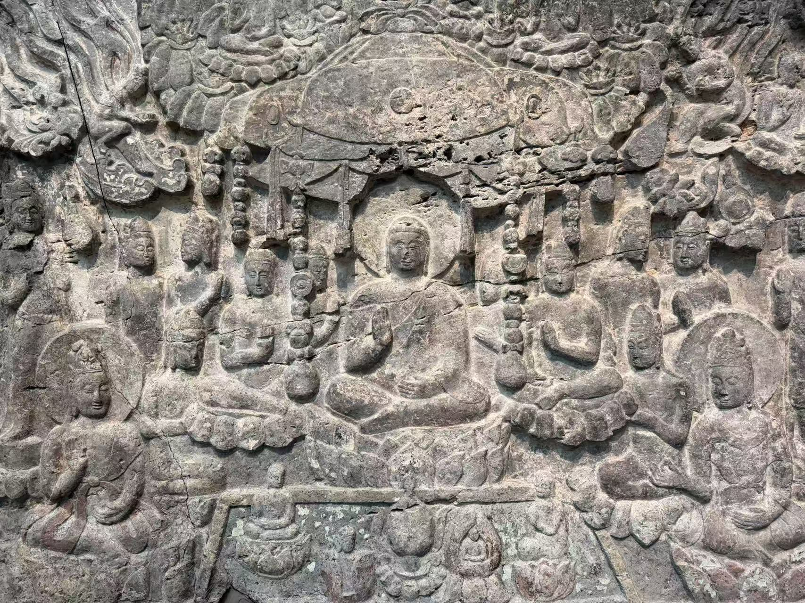

XIANGTANGSHAN / 南响堂第二窟
阿弥陀佛西方净土浮雕
Western Paradise of the Buddha Amitabha

- 收藏
- 弗利尔美术馆
- 编号
- F1921.2
- 年代
- 北齐（550—577）
- 材料
- 石灰岩，残留彩绘
- 原属洞窟
- 南响堂第二窟
作品札记
中央阿弥陀佛坐在华盖之下，周围层层排列菩萨与其他人物。下方莲池把画面向前展开，莲花中现出的小人物表达往生净土后的化生。细部照片将中央佛、华盖与池岸连在一起，适合沿着上下层次慢慢读。
这块宽334.5厘米的浮雕来自南响堂第二窟。响堂山项目将西方净土图定位于洞口内侧上方；原来进入洞窟的人，需要回望或仰视这一整片图像。现存的断裂边缘，使宏大的群像同时成为一件流散残件。
弗利尔档案记录，它与另一块诸佛菩萨集会浮雕经来远公司（Lai Yuan & Co.）购入，款项分期支付于1921—1922年。1921年铁路运输抵达时发生损坏，随后进行了修复。这段经历解释了为何收藏史也必须包含搬运与修补。
现场展签


现场与细部


